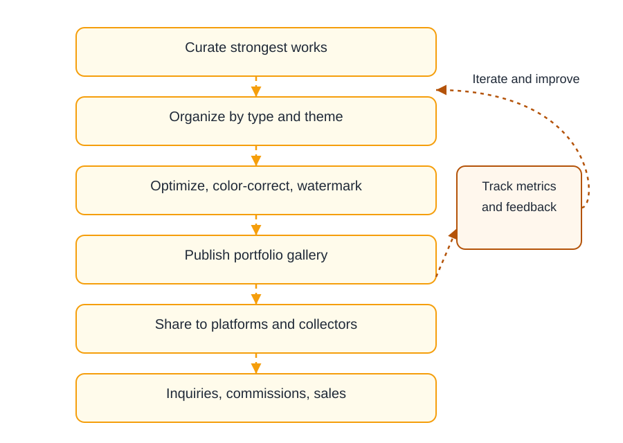

Control flow (diagram)
English diagram summarizing how uploads become monitored, limit-aware shares.

Settings you should actually touch
Screenshot reference from MaiImg — UI text may include Chinese labels; controls are the same product (麦瓜图床).

Limits & expiration emphasis
Marketing still highlighting bounded access — pair with your written policy for clients.
Creative delivery pattern
Portfolio-style flow for designers — mirror it with your folder naming on disk before upload.

Printable checklist
- Batch ≤ 25 files; split by client or campaign.
- Rename files on disk before upload (
clientA_look01.jpgnotIMG_2093.jpg). - Set view limits when the audience is finite (board decks, reviewers).
- Copy the canonical URL from MaiImg — avoid URL shorteners that hide the destination.
- Watch the analytics dashboard 48 hours after sending.
- Revoke links when assets expire or NDAs end.
- For huge sources, pre-compress using the dedicated compression guide.
Proof you reached the room
Tracking view reinforces professional follow-ups — screenshot reference:
FAQ
Twenty-five per batch. Create multiple links if you need isolation between audiences.
Whenever you want the link to die after a known number of opens — great for reviewer rounds.
Yes — different language name, identical product.
For multi-megabyte RAW or TIFF exports, yes — read the compression article next.
Delete or revoke inside MaiImg so even historic emails lose access going forward.